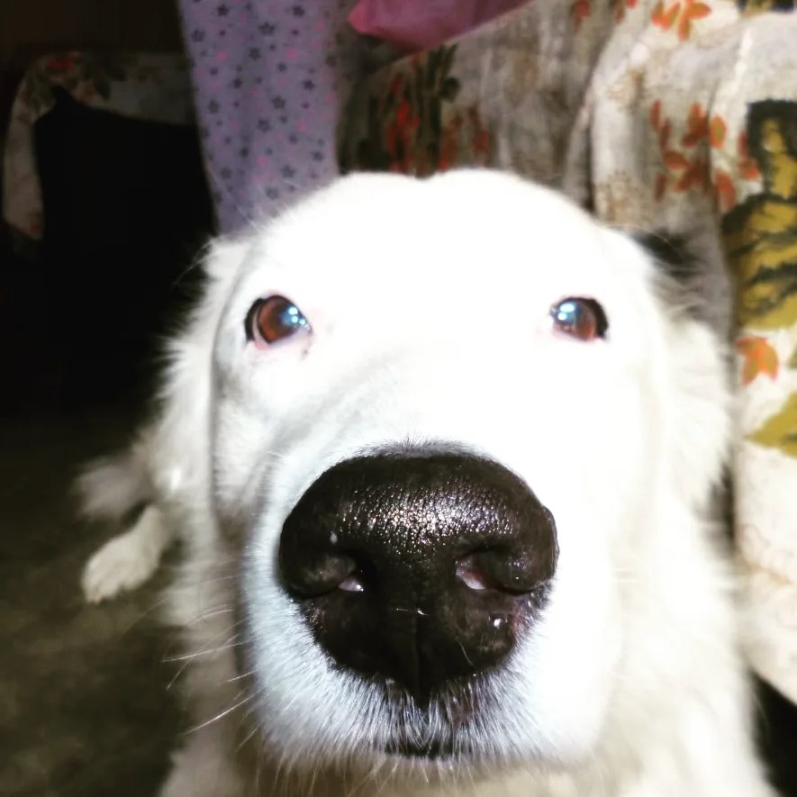

Viviendo Las Pasiones De Mi Vida

Quien Soy
Hola mi nombre es Diana Carolina Quispe Flores tengo 18 año; comense a estudiar diseño grafico ya que me atrapo la forma en la que podemos desarrollar nuestra creatividad a lo largo de toda la profesión. Bueno por parte de mis papa soy una personas muy allegada a mis costumbres ya que desde muy pequeña mi familia se dedico a enseñarme las costumbres de mis antepasados De parte de mi familia paterna son de jauja ya que por parte de ellos me enseñaron las festividades que se realizan en el pueblo de jauja, De parte de mi familia materna son de ayacucho y pues de ellos aprendi lo que son las festividades como son la semana sannta en ayacucho y de igual manera los lugares turisticos tan bellos que hay en ese lugar.
Hobbies
Escultura
Este trabajo fue realizado en primer ciclo, pude descubrir el gusto por realizar las esculturas y poder represenatr cosas mas realistas, mi proyecto a futuro es poder realizar la escultura de un pegazo
Dibujo
fue mi primer trabajo con puntos de fuja, con anterioridad ya habia hecho dibujos pero no tan tecnico hasta ese momento
Pintura
normalmente usaba acuarelas y fue mi primera ves que use pinturas al oleo y fue una muy fascinante de poder plasma mi creatividad
Fotografia
en un momento que tuve mi primera camara; siendo una persona muy curiosa pude descubrir las configuraciones de la camara para tomar mejor una fotografia
Cursos favoritos
Diseño de Interfases

Este curso fue mi favorito ya que pude ver como se hacien las pagians web y sus distintas funciones, causando curiosidad en mi en la forma de investigación; haciendo que sea mayor mi conocimiento
Taller De Grafica
En este curso aprendi bastante en el sentido de poder crear piesas graficas que me ayudaron a simplifijar y mejor mis conocimietos
Programas Que Mas Uso
Unos de mis programas mas usados
Este progama lo aprendei por mi cuenta pero aun asi fue una de las cosas que me ayudo a poder empresar en mi trabajo

este programa no lo hizo mucho pero aun asi me gusta su simplicidad
Video Juegos Favoritos
Minecraft es un juego maravilloso por muchas razones, y la gente lo elige por diferentes motivos. Aquí te presento algunas razones amistosas por las que las personas disfrutan jugando Minecraft Creatividad: Minecraft es como un lienzo en blanco donde puedes dar rienda suelta a tu imaginación. Los jugadores pueden construir hermosas estructuras, paisajes y obras de arte utilizando una amplia variedad de bloques y herramientas, lo que hace que el juego sea perfecto para expresar tu creatividad.
Jugar a Genshin Impact es una experiencia encantadora por muchas razones, y la gente elige disfrutarlo por diferentes motivos. algunas razones amigables por las que las personas juegan en Genshin Impact, Mundo Abierto y Exploración:En Genshin Impact, puedes sumergirte en un mundo colorido y diverso llamado Teyvat. Explorar este mundo es una delicia, ya que te invita a descubrir paisajes impresionantes, ciudades vibrantes y emocionantes mazmorras llenas de sorpresas. Combate Divertido